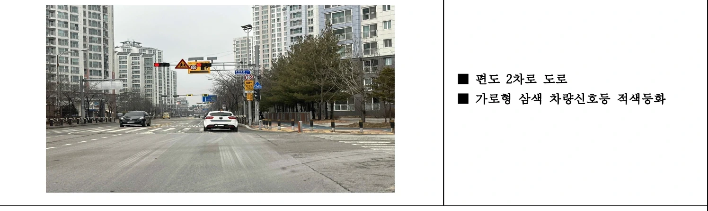

701. Hai cách lái xe nào là không đúng trong tình huống sau?

- ①Nếu muốn đi thẳng thì phải tạm dừng ngay trước vạch dừng.
- ②Khi muốn quay đầu xe, nếu phía trước không có xe nào thì quay đầu xe một cách an toàn thông qua đường giao nhau ở làn đường số 2.
- ③Khi muốn cho hành khách xuống xe, tạm dừng một chút ngay phía trước vạch sang đường dành cho người đi bộ.
- ④Khi muốn rẽ phải, tạm dừng ở ngay phía trước vạch dừng, rồi đi chậm và rẽ phải.
- ⑤Khi muốn sử dụng vạch sang đường dành cho người đi bộ, xuống xe và dắt xe đạp băng qua.
Xem đáp án
Đáp án
② Khi muốn quay đầu xe, nếu phía trước không có xe nào thì quay đầu xe một cách an toàn thông qua đường giao nhau ở làn đường số 2.
③ Khi muốn cho hành khách xuống xe, tạm dừng một chút ngay phía trước vạch sang đường dành cho người đi bộ.
Căn cứ
Trường hợp tại nơi giao nhau có đặt đèn báo ba màu xanh, vàng, đỏ và không có biển báo rẽ trái hoặc quay đầu xe không được bảo vệ thì về nguyên tắc, xe và ngựa không được rẽ trái, quay đầu xe. Vì vậy, nếu bạn không dừng lại ở vạch dừng khi đèn đỏ đang sáng ở ngã tư trên mà rẽ trái hoặc quay đầu xe rồi đi tiếp thì đây nên được coi là trường hợp lái xe vi phạm tín hiệu giao thông theo Điều 5 Luật Giao thông đường bộ, trừ trường hợp đặc biệt (Quyết định 95Do3093 của Tòa án tối cao ngày 31/5/1996). Người đi xe đạp có thể sử dụng lối sang đường dành cho xe đạp (Điều 15-2, Đoạn 2 của Luật Giao thông Đường bộ) hoặc xuống xe đạp và di chuyển sang lối qua đường dành cho người đi bộ theo tín hiệu của người đi bộ. Cấm dừng và đỗ xe trong phạm vi 10 m tính từ mép đường ngang đường sắt hoặc lối qua đường dành cho người đi bộ (Luật Giao thông đường bộ, Điều 32, Đoạn 5).
Phần căn cứ là bản dịch máy để tham khảo.